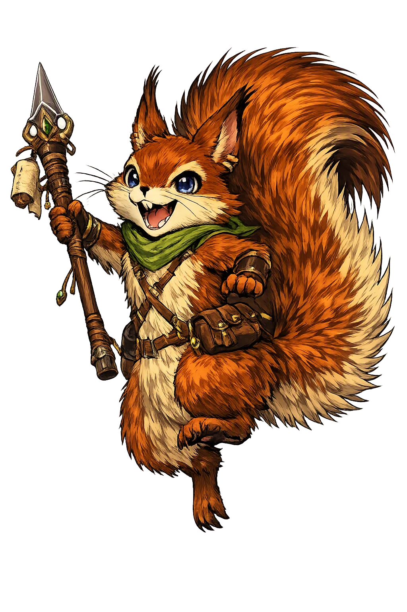
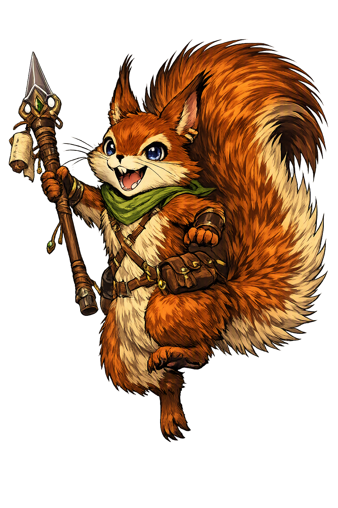

Unicode restoration and ASCII comparison
ᚱᛅᛏᛅᛏᚢᛋᚴᚱ
The name in its original Norse form. Ratatoskr (ᚱᛅᛏᛅᛏᚢᛋᚴᚱ) is attested in the source tradition — “Drill-tooth”. Its original diacritics and script distinctions carry the full phonetic and orthographic weight of the source tradition.
ratatoskr
The plain ratatoskr form is identical to the Unicode restoration. Because this name is already written in Latin letters, no diacritics, stress, or script information were lost — only capitalization differs.
Ratatoskr
The Unicode restoration does not need to recover lost marks for Ratatoskr. Its value is canonical spelling and consistent cataloguing, not the reconstruction of erased orthography. The domain is readable as-is to both DNS and humanity.
Ratatoskr.com → ratatoskr.com
The non-ASCII characters in Ratatoskr are encoded while the ASCII remains visible. To the DNS, it is Punycode. To humanity, it is Ratatoskr.
How Ratatoskr travels from ancient script to the modern URL
Owned, ideal, and ASCII forms of Ratatoskr
Ratatoskr
Restores ᚱᛅᛏᛅᛏᚢᛋᚴᚱ. The full Unicode restoration. ratatoskr.com is not in the PuniCodex collection — it is watched for release; if it drops, this temple upgrades to an owned flagship.
How Ratatoskr was spoken
The Drill-Tooth, the Malicious Messages, and the Trunk of the World-Ash
Ratatoskr is the squirrel of the world-ash Yggdrasill: the small tireless runner of Grímnismál who bears the eagle's words down from the crown and carries Níðhǫggr's answers back up from the roots — and whom Snorri names as the courier of öfundarorð, malicious messages, between the two great enemies of the tree.
The world-tree itself, 'the greatest and best of all trees': Ratatoskr's whole road, from the eagle's crown to the roots over Hvergelmir.
The great eagle perched in the ash's limbs, wise in many things — with the hawk Veðrfölnir sitting between its eyes.
The Malice-Striker: the serpent at the root in Niflheimr who gnaws the ash and sucks the corpses of the dead — the eagle's eternal correspondent.
The hawk between the eagle's eyes — the watcher in the crown, witness to every word the squirrel carries down.
Stories of Ratatoskr
Ratatoskr's dossier is two passages long and perfectly cut: one stanza of Grímnismál and one chapter of Gylfaginning. Between them they give him a road, a cargo, and a character — and nothing else in the corpus adds a word.
In Grímnismál, Óðinn — masked and bound between the fires of King Geirrøðr — recites the inhabitants of the world-ash, and the squirrel gets his stanza: Ratatoskr is the íkorni who must run on Yggdrasill's ash; the eagle's words he must carry from above and tell to Níðhǫggr below. The verb is skal — 'shall, must': the running is not a habit but an office, written into the tree's economy as fixedly as the dew that falls from its branches. In a single stanza the Edda gives the smallest creature in the cosmos a route that spans it.
The stanzas around the squirrel build the tree's full menagerie: four harts — Dáinn and Dvalinn, Duneyrr and Duraþrór — bite the new shoots; more serpents lie beneath the ash than any unwise ape would think, Góinn and Móinn, Grábakr and Grafvölluðr, Ófnir and Sváfnir, and they gnaw the roots forever; and the poem closes the survey with its most famous sentence: the ash of Yggdrasill suffers agony, more than men know — the hart bites from above, the trunk rots at the side, and Níðhǫggr gnaws from below. Ratatoskr runs his messages through a tree that is being eaten alive at every level.
Snorri's prose fills out the stanza into a portrait. An eagle sits in the limbs of the ash, and it has knowledge of many things, and between its eyes sits a hawk called Veðrfölnir. A squirrel called Ratatoskr springs up and down the ash and bears öfundarorð — words of malice, slander-tidings — between the eagle and Níðhǫggr. Where Grímnismál described a messenger, Snorri describes an agent provocateur: the squirrel does not merely deliver the correspondence of the crown and the root, he keeps the feud alive, carrying each insult to the ear best placed to feel it. The four harts and the wells of Urðr and Mímir complete the chapter — but the squirrel is its only animal with an errand.
The lower terminus of Ratatoskr's road is the worst address in the cosmos. Snorri sets the third root of the ash over Niflheimr and the spring Hvergelmir, and there Níðhǫggr gnaws the root from below while countless serpents coil with him. Völuspá gives the Malice-Striker his other aspect: in Nástrǫnd, the corpse-shore, he sucks the bodies of the dead, and the wolf tears men — and at the poem's end the dark dragon comes flying up from Niðafjǫll, bearing corpses on his wings, in the last light before the world sinks. Every word Ratatoskr carries down lands in that ear; every word he carries up rises from it. The squirrel's whole mythology is the maintenance of that terrible conversation.
Ratatoskr is the Edda's smallest cosmological fact and one of its sharpest. The universe is held in a tree; the tree is being eaten from crown to root; and through the middle of the disaster runs a squirrel, up and down, carrying the worst things the top and the bottom can think of to say to each other. Snorri's word for the cargo is exact: öfundarorð — not news, not warnings, but malice. The myth knows something the etiquette books miss, that feuds do not survive on hatred alone but on delivery — that between every great enmity runs some small, quick, indispensable creature who keeps the words fresh. Ratatoskr never appears in a saga, never wins a fight, never speaks a line the sources record. He only carries. And the Edda gives him eternity for it: while the ash stands, the squirrel runs, and the eagle and the dragon never lack for ammunition.
Enter Extended Lore